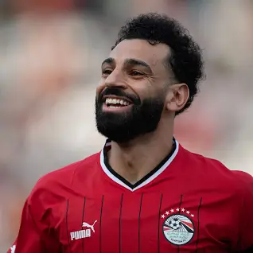

<!DOCTYPE html>
<html lang="en"></html>
<html>
<head>
  <title>My Favorites</title>
  <meta charset="UTF-8">
  <meta name="viewport" content="width=device-width, initial-scale=1.0">
  <link rel="stylesheet" href="style.css">
</head>

<body>
  <div class="container">
    <div class="section section-1">
      <h2 class="section-title">Who is my favorite football player?</h2>
      <div class="section-content pramery">
        
      </div>
    </div>

    <div class="section section-2">
      <h2 class="section-title">What are your top 3 favorite foods?</h2>
      <div class="section-content">
        <ol>
          <li>Pizza</li>
          <li>Sushi</li>
          <li>Chocolate</li>
        </ol>
      </div>
    </div>

    <div class="section section-3">
      <h2 class="section-title">What is your favorite quote?</h2>
      <div class="section-content">
        <blockquote>"The only way to do great work is to love what you do." - Steve Jobs</blockquote>
      </div>
    </div>

    <div class="section section-4">
      <h2 class="section-title">What is your proudest moment of 2022?</h2>
      <div class="section-content">
        <p>Winning the championship in my favorite sport was an incredible achievement. It took months of hard work, dedication,
          and teamwork, but the feeling of lifting that trophy made it all worth it. The journey was filled with ups and downs,
          but we never gave up. We pushed ourselves to the limit, overcame obstacles, and proved that we were the best. The
          support from my teammates and coaches was invaluable, and I couldn't have done it without them. This proud moment
          taught me the power of perseverance and the rewards that come with it. It's a memory I will cherish forever.</p>
      </div>
    </div>
  </div>
</body>

</html>